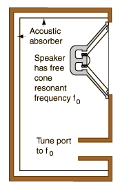

Ported Bass-Reflex Enclosure
|
 |
The bass-reflex enclosure makes use of a tuned port which projects some of the sound energy from the back of the loudspeaker, energy which is lost in a sealed enclosure. But care must be taken to avoid the back-to-front cancelation of low frequencies which characterizes unenclosed loudspeakers. This is avoided by tuning the cavity resonant frequency of the enclosure to the free-cone resonant frequency of the loudspeaker. This has the effect of projecting bass frequencies from the port in phase with the sound from the front of the cone, at least at the resonant frequency. The overall effect is the increasing of bass efficiency and the extension of the bass response to lower frequencies. |
|
Index
Loudspeaker concepts |